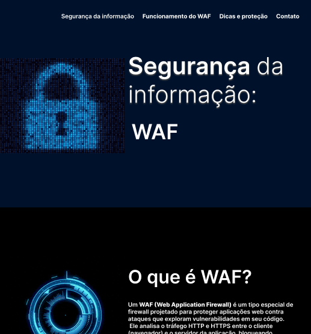

Projeto WAF e WAFW00F
Desenvolvi este projeto com o objetivo de demonstrar, de forma prática e didática, o funcionamento de um Web Application Firewall (WAF) e sua importância na proteção de aplicações web contra ameaças cibernéticas. A proposta consistiu na criação de um ambiente controlado para simular requisições e identificar a atuação de diferentes mecanismos de segurança. Como parte do processo, utilizei a ferramenta WAFW00F, amplamente reconhecida por sua capacidade de detectar e identificar quais WAFs estão em uso em um determinado sistema. Durante o desenvolvimento, explorei conceitos como filtragem de tráfego HTTP, bloqueio de ataques comuns (como SQL Injection e XSS) e análise de respostas do servidor. O uso do WAFW00F permitiu compreender na prática como diferentes soluções de WAF se comportam e como podem ser identificadas por meio de padrões de resposta. Este projeto contribuiu para o aprofundamento dos meus conhecimentos em segurança da informação, especialmente na área de proteção de aplicações web, além de reforçar habilidades em análise, testes e uso de ferramentas especializadas.